Chapter 17 Visualizations for Env Chem
We’ve already encountered and produced several types of plots to visualize our data. We’ve also gone over the theory and basic operations of ggplot() in the Visualizations chapter. In this chapter, we’ll expand on these and explicitly walk through the most common data visualization methods you’ll encounter in the field of environmental chemistry. Additionally, we’ll learn how to get your plots ready for publication.
The plots we’ll be covering include:
- bar plots
- box plots
- histograms
- scatter plots (with linear regression)
- Touch ups for publications
These are only a smattering of the possible data visualizations you can perform in R. We’re focusing on them because of their ubiquity in our field, but they often won’t be the ideal visualizations you need to communicate your story. We highly recommend you check out the following resources. Not only are they a great source of inspiration, they provide example code to get you up and running. We consult them regularly.
- Data to viz which features a decision tree to help you decide on what plot would serve you best.
- ggplot2 extensions gallery which is the best repository to the plethora of
ggplot2()extensions. If you need a specialized plot, check here. Odds are someone has a solution to your problem. Some great extensions includeggrepelfor easy labelling of points;ggpmiscfor statistical annotations; andggpubrfor publication ready plots, group wise comparisons, and annotation of statistical significance. - The R Graph Gallery contains hundreds of charts made with R. While it’s not as easy to navigate as Data to viz, it does contain many more examples; it is definitely worth exploring.
Discrete vs. continuous variables
The type of plots available to you, and how they display, are dependent on the type of data. Namely, whether your data is discrete (i.e .can only take particular values) or continuous (is not restricted to defined separate values, but can occupy any value over a continuous range). So a variable consisting of cities would be discrete, whereas a variable like concentration of a chemical would be continuous. You can treat numeric data as categorical if you so chose. Understanding the difference between discrete and continuous data will shape how you plot your data.
Prerequisites
This chapter assumes you’ve read the Tidying your data chapter to understand the concept of tidy data, and the Visualizations chapter to understand the fundamental logic of the ggplot2 package.
Additionally, for this chapter we’ll mostly be using the atlNO2 and sumAtl datasets we created in the Summarizing data chapter. Please revisit that chapter for details on that dataset.
17.1 Bar chart
Bar charts, also called column charts, represent categorical data with rectangular bars whose height/length is proportional to the values they represent.
ggplot(data = sumAtl,
aes(x = city,
y = mean)) +
geom_col() +
coord_flip() # rotates plot 90 degrees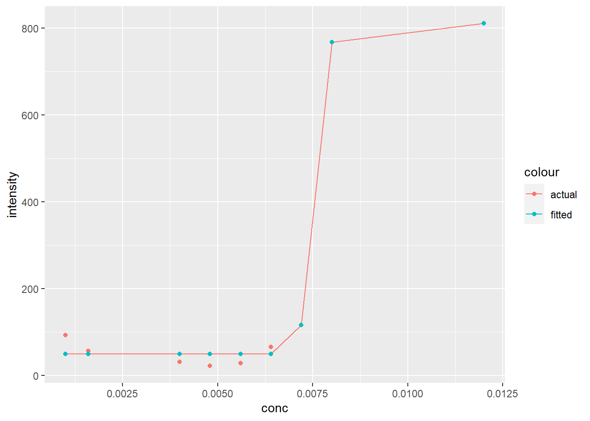
Pretty boring, but it’s gotten the job done. Note that we used coord_flip() to rotate our plot 90\(^\circ\) therefore the supplied x option of city is now plotted on the y-axis. This makes reading long categorical names (i.e. the names of cities) easier. coord_flip() doesn’t change anything else except the final orientation of the plot.
Also note that ggplot() includes geom_col() and geom_bar(). While both can be used to make bar charts. geom_col() is used when you want to represent values in the data (i.e. the precalculated mean as shown above), whereas geom_bar() makes the height of the bar proportional to the number of cases in each group.
17.1.1 Adding error bars
Any measurement always has an associated uncertainty/variability. These values are expressed visually via error bars demarcating the minimum and maximum variability and give a general idea of how precise a measurement is. In our sumAtl dataset we’ve calculated the standard deviation as a measure of uncertainty. In our example, we’ve used the standard deviation (sd) as a measure of uncertainty of our calculated annual means.
To plot error bars we use geom_errorbar() and pass the min and max values we want the error bars to be. In our case, the lowest value would be ymin = mean - sd, and the highest would be ymin = mean + sd. Our plotted error bars now indicated plus or minus one standard deviation from the mean.
ggplot(data = sumAtl, aes(x = city, y = mean)) +
geom_bar(stat = "identity") +
geom_errorbar(aes(ymin = mean - sd,
ymax = mean + sd)) +
coord_flip()
Some of the error bars indicate we could get a negative concentration of NO2. This is physically impossible, but it does suggest we should evaluate the distribution of our data (see below). Note that since we’re calculating error bar ranges on the fly, we’ve had to specify new aesthetic arguments to geom_errorbar().
17.1.2 Ordering bar charts
Often with bar charts (and similar plots), it’s useful to order the bars to help tell a story or convey information. We can effectuate this using fct_reorder():
ggplot(data = sumAtl,
aes(x = fct_reorder(city, mean),
y = mean)) +
geom_bar(stat = "identity") +
geom_errorbar(aes(ymin = mean - sd,
ymax = mean + sd)) +
coord_flip()
So in our aesthetics call for geom_bar we specified the x variable should be city, but ordered based on their corresponding mean value. Doing this has helped shed some light on trends in NO2 levels. For one, despite Labrador City having lower mean [NO2], we can now easily see that it has a larger variation in [NO2] then Corner Brook.
17.1.3 Grouping bar charts
Sometimes you’ll want to group bar charts as in the concentration of several chemicals in different locations. We can easily group bar charts in ggplot. Let’s go ahead and group our mean annual [NO2] by province by simply (1) reordering based on province, and (2) colour bars based on province:
ggplot(data = sumAtl,
aes(x = fct_reorder(city, p),
y = mean,
fill = p)) +
geom_bar(stat = "identity") +
geom_errorbar(aes(ymin = mean - sd,
ymax = mean + sd)) +
coord_flip()
There are other ways to group your bar charts depending on the story you want to tell and the data you have. Please consult the Grouped, stacked and percent stacked barplot in ggplot2 page from the R-graph-gallery.
17.2 Box Plots
Box plots give a summary of the distribution of a numeric variable through their quartiles. You’ve no doubt seen them before, but they’re often misinterpreted. Let’s create a box-plot using geom_boxplot() and our Atlantic hourly NO2 measurements, then we’ll break down how to interpret it.
ggplot(data = atlNO2,
aes( x = city, y = conc)) +
geom_boxplot() +
coord_flip()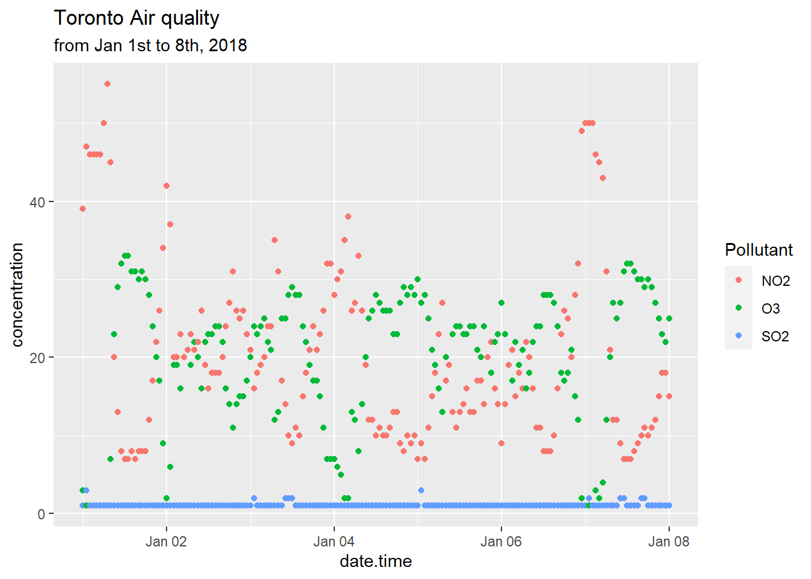
Let’s break down how to interpret one box before tackling the entire set. As previously mentioned, box plots describe data in their quartiles. Quartiles basically arrange the data from the lowest to highest value and split the data at three points:
- The first quartile (Q1) is halfway between the lowest value and the median (50%) of the data. In other words 25% of the data lies below Q1.
- The second quartile (Q2) is the median. 50% of the data lies below, and 50% lies above this point.
- The third quartile (Q3) is halfway between the median and the highest value in the data. In other words, 75% of the data lies below Q3.
The box in box-plots represents the range between Q1 and Q3. This is known as the inter-quartile range (IQR) and 50% of the total data falls somewhere inside this box. You can estimate the distribution by the symmetry of the box. if Q1 to the median is smaller than the median to Q3, the data has a positive skew (right sided skew), and vice versa.
Rounding it out, geom_boxplot() includes whiskers, the thin lines emanating out from the box. This is used the predict outliers and is calculated as \(outliers = \pm 1.5 \times IQR\). Anything outside the whiskers is considered an “outliers” or an extreme point, and is plotted individually.
Putting this all together, let’s look at the [NO2] for St. Johns city:

Note that we’ve plotted the actual distribution of the data. Prior to the computers, this was incredibly difficult to do, hence the use of box plots which can be drawn knowing only five points. However, the simplicity in calculating box-plots means they can hide trends and observations of your data. On top of that, they aren’t very intuitive (see the score of text needed to explain them). Consequently, we strongly recommend you explore some of the Box plot alternatives unless you are explicitly asked to create box-plots.
17.2.1 Box plot alternatives
The first alternative to box-plots is the violin plot which is made using geom_violin(). It is similar to the box-plot, but instead of displaying the quartiles, it plots the density within each group and is a bit more intuitive then box-plots. While the example below isn’t the most convincing given the scale of the dataset, violin plots are useful for identifying underlying trends in the distribution of data. For example, in the plot below we can see that some towns such as Marystown principle has days where [NO2] = 0 ppb, whereas Grand Falls-Windsor has a large number of days with low, but measurable levels of NO2. This might be because of difference in regional ambient levels of NO2.
ggplot(data = atlNO2,
aes(x = city, y = conc, fill = p)) +
geom_violin() +
coord_flip()
Another alternative is to plot the points overtop of the box-plot. You’ve encountered this example in R coding basics. Truth be told, there are countless way to visualize distribution.
17.2.2 Statistical comparisons between groups
Often box-plots are used to show differences in distributions between two groups (i.e. population in Location A vs. Location B). How you determine this statistically is a different story, but packages such as ggpubr have many built in functionalists to display the results of these outcomes.
From our NO2 data, St. Johns appears to have the highest levels of NO2. Let’s apply a pairwise test against other Newfoundland communities to see if our observation is statistically significant based upon the results of a Wilcoxon test.
nfld <- atlNO2 %>%
filter(p == "NL") # only nfld stations
# Code from ggpubr website
ggpubr::ggviolin(nfld, x = "city", y = "conc") +
ggpubr::stat_compare_means(ref.group = "St Johns",
method = "wilcox.test",
label = "p.signif") 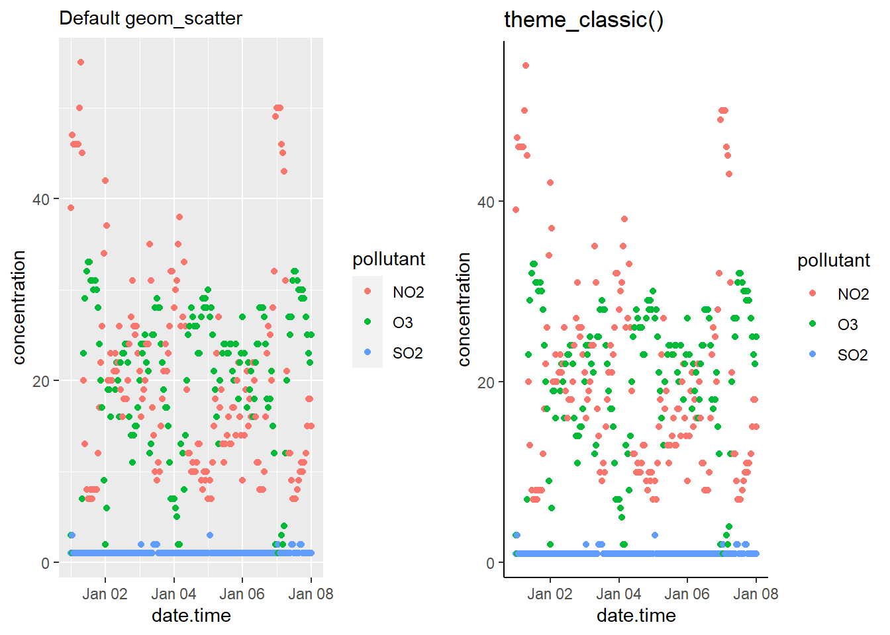
Based on the results of our test, all other stations in Newfoundland have statistically significant differences in the median NO2 values. Note the validity of this statistical approach to this particular problem is called into question based on the distribution of the data etc. We’ve included it to demonstrate how to label significance on plots, rather than an explicit discussion on statistics.
For more information on ggpubr, adding p-values and significance labels, and different pairwise statistical test please visit ggpubr: Publication Ready Plots.
17.3 Histograms
Histograms are an approximate representation of the distributions of numerical data. They’re an approximation because you arbitrarily “bin” your data into groups and then count the number of values inside that bin. The frequency, or count, in each bin is represented by the height of a rectangle whose width equals that of the bin. geom_histogram() is used to create histograms:
ggplot(data = subset(atlNO2, city = "St Johns"),
aes(x = conc)) +
geom_histogram() +
labs(subtitle = "Distribution of St. Johns' NO2 levels in 2018")## `stat_bin()` using `bins = 30`. Pick better value with `binwidth`. We can alter the resolution of our histogram by modifying the width of the bins using the
We can alter the resolution of our histogram by modifying the width of the bins using the binwidth argument or by specifying the number of bins with the bins argument. The former is useful when you don’t know the range of your data, whereas the latter is useful is you do (i.e. numbers between 0 and 100).
ggplot(data = subset(atlNO2, city = "St Johns"),
aes(x = conc)) +
geom_histogram(binwidth = 1) +
labs(subtitle = "Distribution of St. Johns' NO2 levels in 2018, binwidth = 1")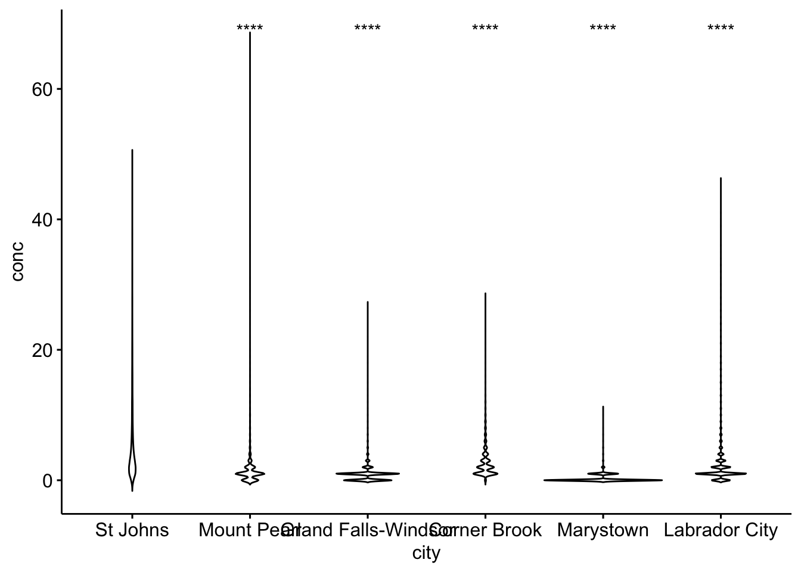
17.3.1 Multiple histograms
While you can overlap histograms, it get’s difficult to read with more than a handful of datasets. If we wanted to plot histograms of all the cities in our dataset we would have to use a small multiple via the facet_grid() or facet_wrap() arguments. facet_grid() allows you to arrange many small plots on a grid defined by variables in your dataset (i.e. columns for provinces, and rows for different pollutants). In the example below we’ve used facet_wrap(~city) which creates a 2D layout of histograms of each cities NO2 values. Note the tilde , ~, preceding in ~city.
ggplot(data = atlNO2,
aes(x = conc, fill = p)) +
geom_histogram(binwidth = 1, position = "identity") +
facet_wrap(~city)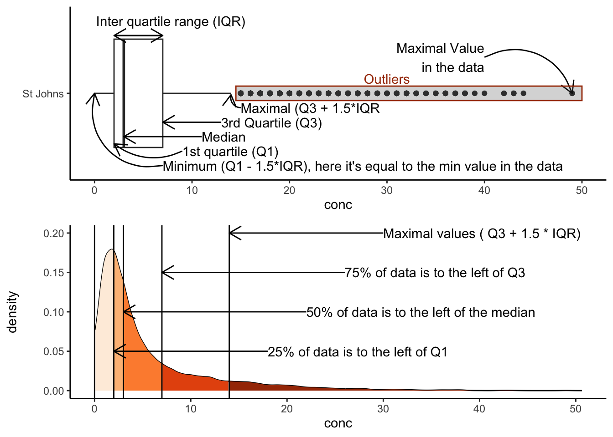
17.4 Scatter plots
Scatter plots display values of two variables, one of which is a continuous variable. Each data point ins plotted as an individual point on.You’ve already made scatter plots in the form of a time series during the Section 1 tutorial exercise. We’ve already touched upon scatter plots during the [Linear Regression] chapter where we also overlaid our linear model over our concentration points. So now we’ll touch upon some things you can do to improve your scatter plots.
17.4.1 Marginal plots
You can easily combine a scatter plot with marginal plot. This is useful to summarize one dimension of our scatter plot. For example, let’s revisit the time series plot we made in R coding basics. We might want to know the distribution of concentrations of the individual pollutants. using the ggExtra package and the ggMarginal() function we can get the following:
torontoAir <- read_csv("data/2018-01-01_60430_Toronto_ON.csv")##
## -- Column specification --------------------------------------------------------
## cols(
## naps = col_double(),
## city = col_character(),
## p = col_character(),
## latitude = col_double(),
## longitude = col_double(),
## date.time = col_datetime(format = ""),
## pollutant = col_character(),
## concentration = col_double()
## )# note we're storing our plot in the variable 'torPlot'
# and we're not plotting SO2
torPlot <- ggplot(data = subset(torontoAir, pollutant != "SO2"),
aes(x = date.time,
y = concentration,
colour = pollutant)) +
geom_point() +
theme(legend.position = "bottom")
# We're passing our torPlot to the ggMarginal Function
ggExtra::ggMarginal(torPlot, margins = "y", groupColour = TRUE, groupFill = TRUE)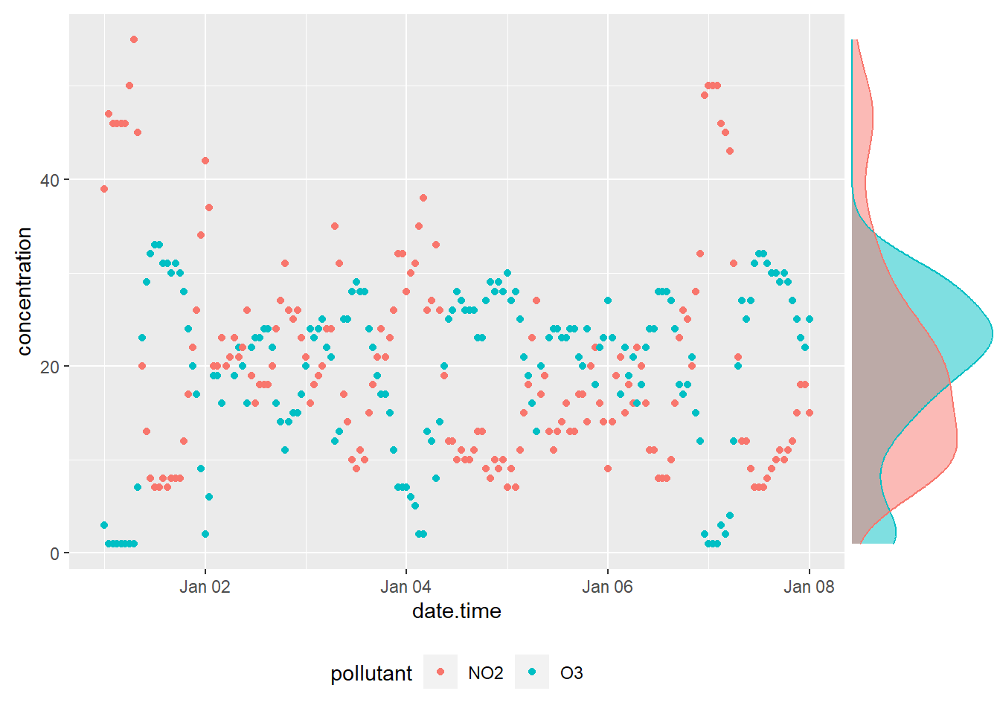
We can now see the distributions of NO2 and O3 overlaid on the vertical axis. note that ggMarginal() only works with scatter plots.
There are plenty of other marginal options scatted about various packages. You can see many of them in action (with beautiful examples) at Tufte in R by Lukasz Piwek.
17.5 Plotting for publication
Up until now we haven’t payed much attention to the explicit aesthetics of plots beyond what we needed for our exploratory analysis. However, many journals, publications, instructors, etc. will want plots to adhere to certain aesthetic standards. There’s scores of options to play with, so we recommend you consult the ggplot2 Cheat Sheet.
17.5.1 Plot Themes
Overall themes can be applied to ggplot. The simple and minimalist theme_classic() is satisfactory for most submissions, but you can peruse the available these in ggplot here or you can explore many more themes in the ggthemes package.
# generating example plot to modify
p <- torPlot <- ggplot(data = torontoAir,
aes(x = date.time,
y = concentration,
colour = pollutant)) +
geom_point()
# default theme
default <- p + labs(subtitle = "Default geom_scatter")
# Classic theme
classic <- p +
theme_classic() +
labs(title = "theme_classic()")
# arranging into grid
gridExtra::grid.arrange(default, classic, ncol = 2)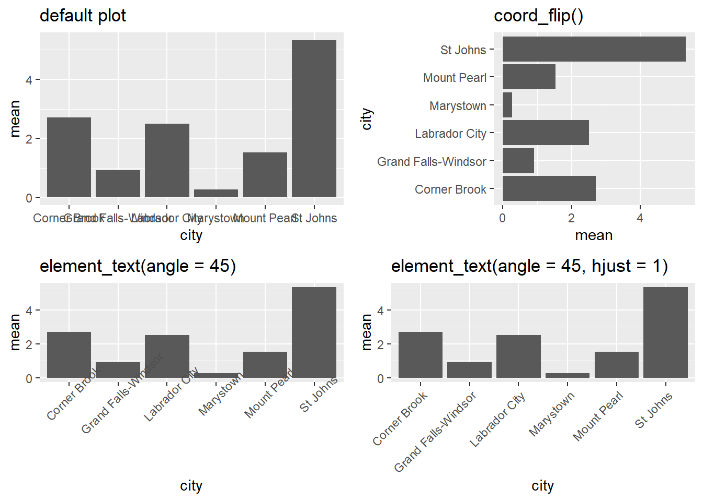
17.5.2 Legends
You can specify the position of the legend under the theme() option like such:
bottom <- p + theme(legend.position = "bottom")
inside <- p + theme(legend.position = c(.95, .95))
gridExtra::grid.arrange(bottom, inside, ncol = 2)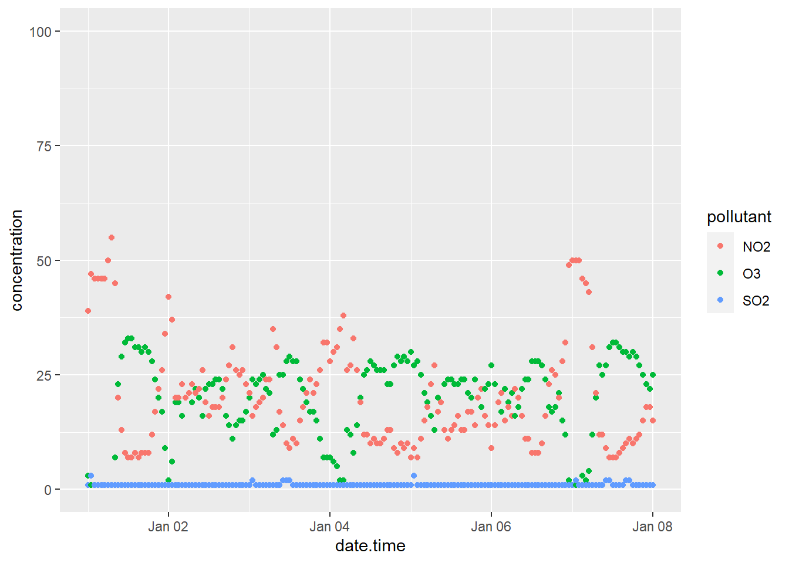
Other legend positions include: “none,” “left,” “right,” “bottom,” “top,” or a two-element numeric vector to specify the location such as c(0.95, 0.95) for inside the top-right corner. c(0.05, 0.05) would place it inside the bottom right corner. Also note that legend.position = "none" will remove the legend entirely.
17.5.3 Modifying labels
The labels generated for the plots are derived from the variable names passed along to the ggplot() function. Consequently, variable names that are easy to code become ugly labels on the plot. You can modify labels using the labs() function. Note in the example below that we changed the legend’s title by specifying what aes() option we used to create the legend; in the example below it’s colour.
p + labs(title = "Toronto Air quality",
subtitle = "from Jan 1st to 8th, 2018",
xlab = "Date",
ylab = "Concentration (ppb)",
colour = "Pollutant")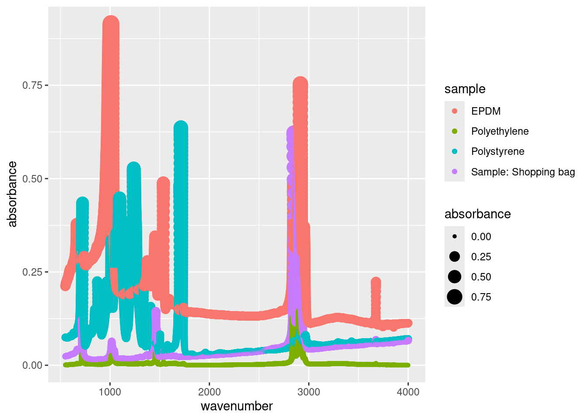
17.5.4 Modifying Axis
We’ve already talked about labelling axis titles in Modifying labels, and adding marginal plots in Scatter plots. So we’ll just briefly touch upon some simple axis modifications.
17.5.4.1 Transforming axix
Transformations are largely related to continuous data, and are done using scale_y_continuous() or scale_x_continuous() functions. For example to scale the y-axis of our plot we’d do the following:
p +
scale_y_continuous(trans = "log10") +
labs(y = "Log10(concentration)")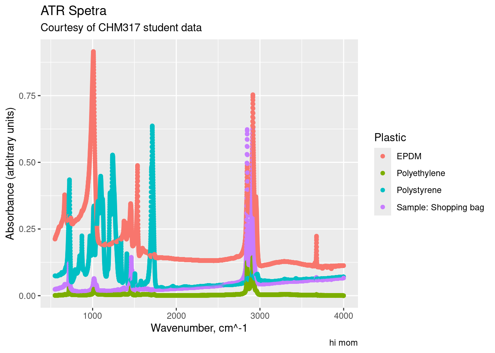
Other useful transformations include “log2” for base-2 logs, “date” for dates, and “hms” for time. The later two are useful if R hasn’t correctly interpreted your dataset. The data type for the data.time column of our dataset was correctly interpreted during our initial importation using read_csv(). Hooray for doing it right the first time.
17.5.4.2 Limits
The limits of plots created with ggplot() are automatically assigned, but you can override these using the lims() function. For example we can specify the limits of our example plot to show from 0 to 100 ppb:
p + lims(y = c(0, 100))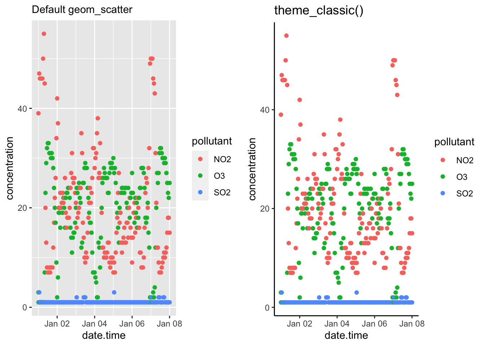 #### Axis ticks/labels
Sometimes when you are plotting, the length of the axis labels is unreadable. This is often the case with categorical data, such as the name of cities like we’ve encountered earlier. We addressed this earlier in [Bar charts] by rotating the plot 90\(^\circ\) with the coord_flip() function. This is often the best solution as it’s how we read English. Another solution is to rotate the axis labels themselves:
basePlot <- ggplot(data = subset(sumAtl, p == "NL"),
aes(x = city,
y = mean)) +
geom_col()
default <- basePlot +
labs(title = "default plot")
flip <- basePlot +
coord_flip() +
labs(title = "coord_flip()")
rotated <- basePlot +
theme(axis.text.x = element_text(angle = 45)) +
labs(title = "element_text(angle = 45)")
rotatedHJust <- basePlot +
theme(axis.text.x = element_text(angle = 45, hjust = 1)) +
labs(title = "element_text(angle = 45, hjust = 1)")
gridExtra::grid.arrange(default, flip, rotated, rotatedHJust, ncol = 2, nrow = 2)